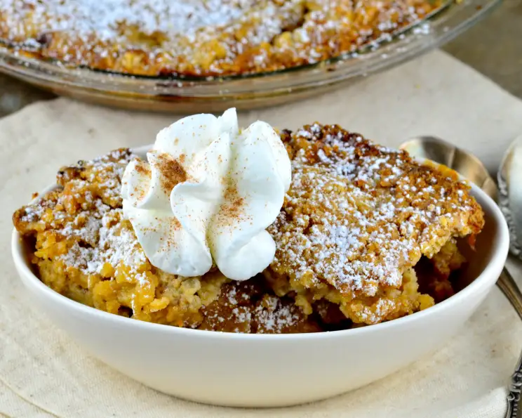

Navajo Peach crisp

Description
Peach cinnamon dessert
Ingredients
- 6 large ripe peaches, peeled, pitted and sliced
- ¼ cup granulated sugar
- ½ teaspoon cinnamon
- ¾ cup unbleached flour
- ¾ cup light brown sugar
- ¼ tea spoon salt
- ½ cup butter
- 2 table spoons pinon nuts
Steps
- Preheat oven to 190 Celsius (375 Fahrenheit)
- In a 1 ½ to 2 quart baking dish toss the peaches with granulated sugar and cinnamon
- In a mixing bowl, combine flour, brown sugar, and salt
- Cut in butter until the mixture resembles coarse meal
- Sprinkle this mixture evenly over the peaches
- Sprinkle the top with nuts
- Bake for 30-40 minutes, until golden brown on top